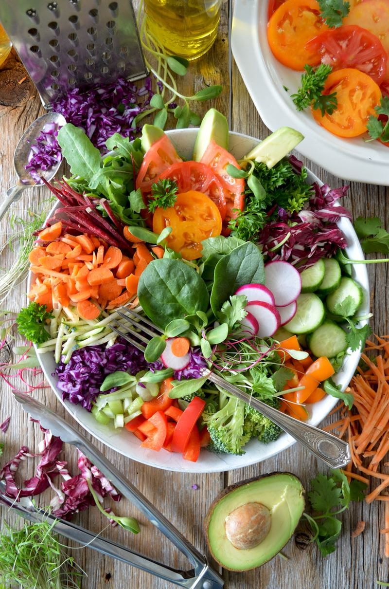
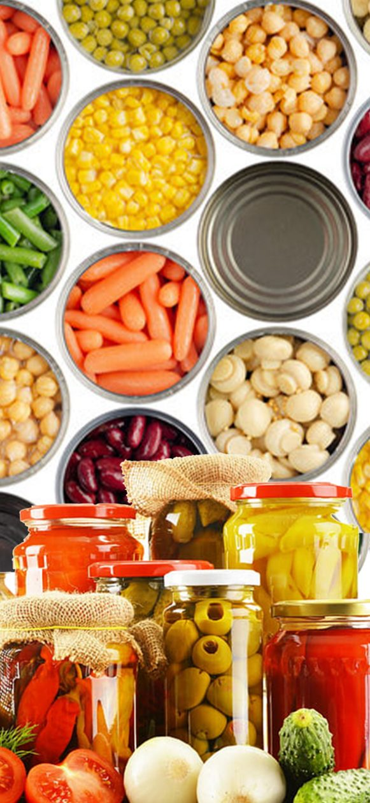
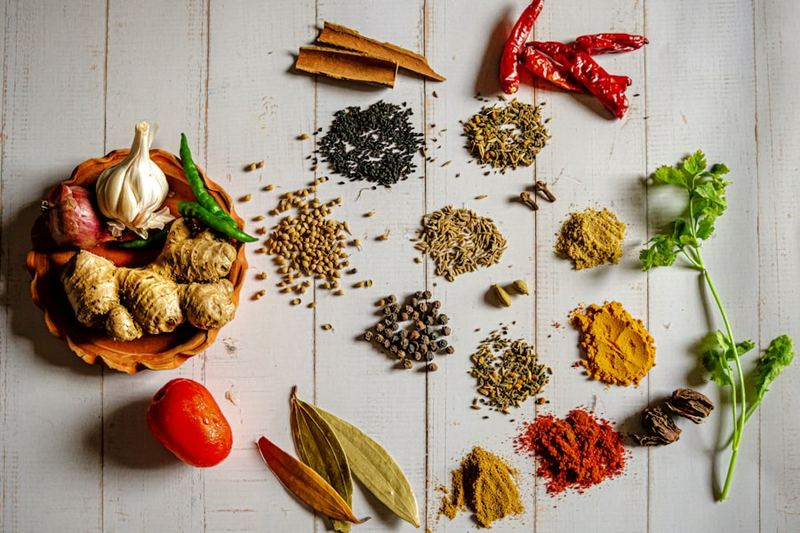
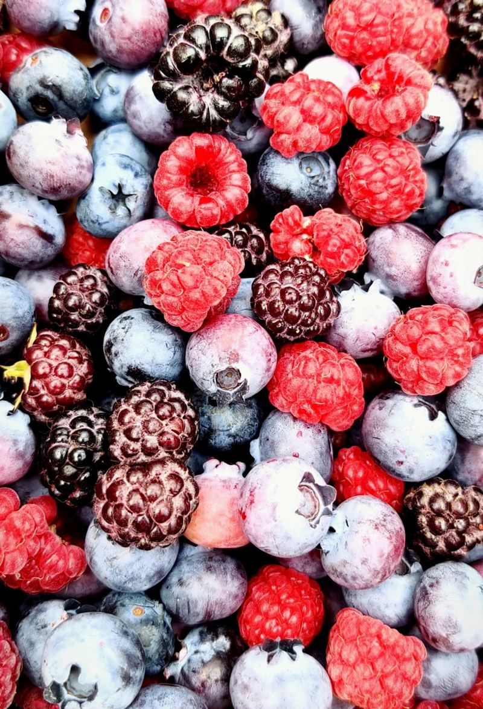

Product Categories
What we make
A broad, flexible range across fresh, shelf-stable and frozen formats — packed to your specification for retail, food service and export.
01 · Fresh Produce
Fresh Produce
Farm-fresh vegetables, herbs and fruits — harvested, handled and delivered to preserve peak freshness and nutrition.
- Vegetables
- Herbs
- Fruits
- Exotic varieties
- Hydroponics
- Mushrooms

02 · Canned Products
Canning & Bottling
Canned and bottled peppers, vegetables, tomatoes, fruits and pulses — locking in flavour and nutrition with long shelf life.
- Jalapeño
- Red Paprika
- Habanero
- Pepperoncini
- Gherkins
- Baby & Sweet Corn
- Tomato — Puree, Paste, Diced
- Cherry Tomatoes
- Pineapple
- Mango Puree
- Strawberry
- Beans (Rajma & Chana)
- Silver Skin Onion

03 · Dehydrated Products
Dehydration
Carefully dried fruits, vegetables, herbs and spices — plus speciality fruit rolls — concentrated in flavour, lightweight and shelf-stable.
- Fruits — Mango, Kiwi, Pineapple, Strawberry…
- Vegetables — Beetroot, Okra, Spinach…
- Herbs — Basil, Lemongrass, Kaffir Lime…
- Spices — Chilli, Turmeric, Ginger, Mint
- Speciality Fruit Rolls
- Sprouts

04 · Frozen Products
Frozen Products
Individually quick-frozen produce, purees and ready-to-eat solutions — convenience without compromising quality.
- Vegetables
- Fruits
- Pulps & Purees
- Ready-to-Eat
- Gravies (Red & Green)
- & many more
- ISO 22000Food Safety Management
- HACCPHazard Analysis Control
- BRCGlobal Food Safety Standard
- FDARegistered Facility
- FSSAILicensed Manufacturer

Custom packing & private label
Packed to your specification
Flexible formats, hygienic packing and reliable supply for retail, food service and export markets. Tell us what you need.
Request a quote